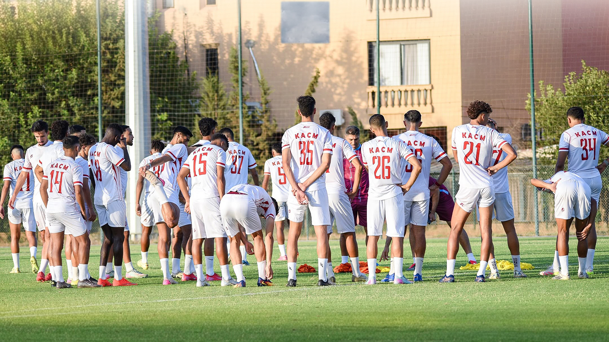
Botola Pro Inwi · Saison 2026/27
Kawkab
Marrakech.
Le club de la Ville Rouge, depuis 1947.
Botola Pro Inwi · 2026/27
Centre des matchs
Le fil du Kawkab
À la une
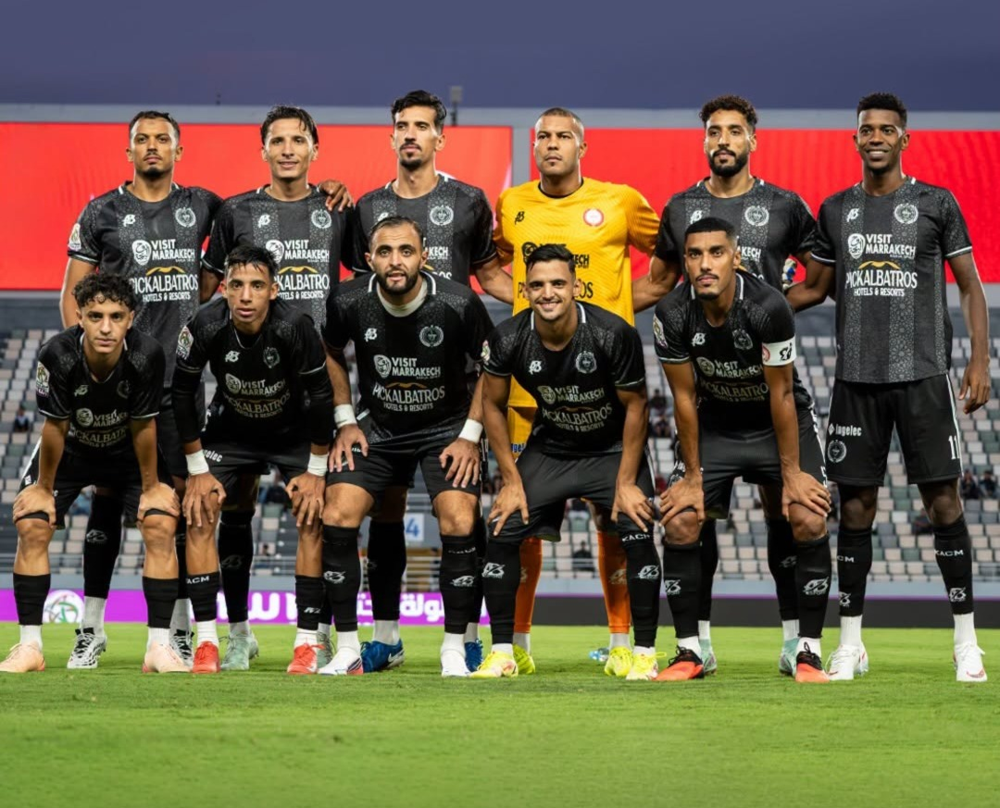
Joueurs à suivre
Botola Pro Inwi · 2026/27
La saison en images
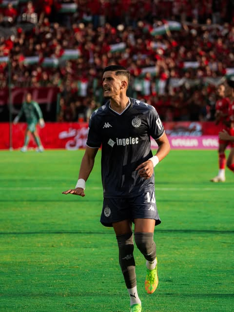
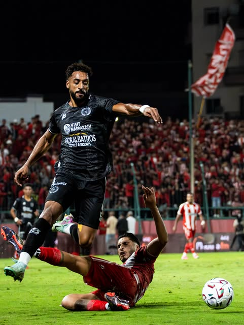
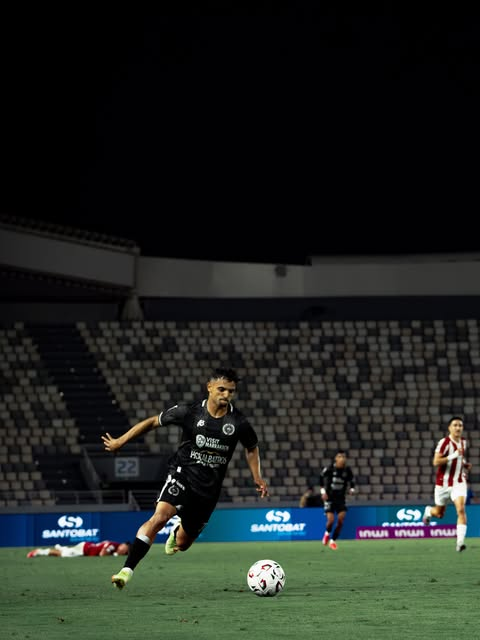
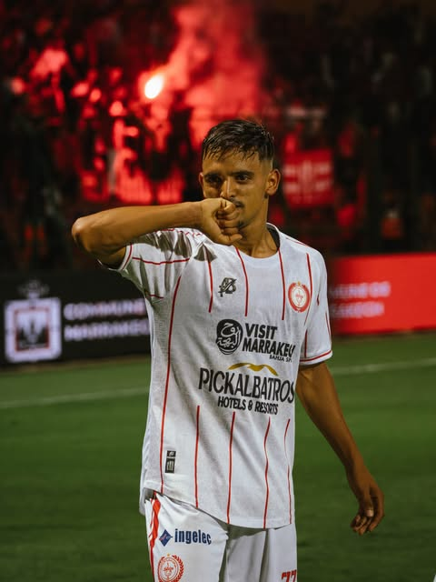
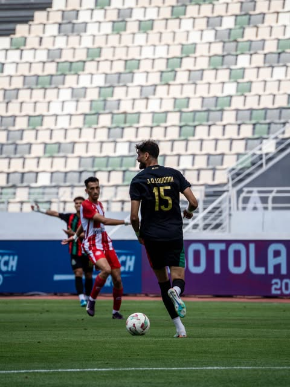
Histoire & palmarès
Marrakech.
Depuis 1947.
Fondé à Marrakech en 1947, le Kawkab Athlétique Club de Marrakech porte le rouge et le blanc de la Ville Rouge. Ses succès en championnat, en Coupe du Trône et en Coupe de la CAF jalonnent l'histoire du football marocain.
Histoire complète du Kawkab- 2Championnats du Maroc1958 · 1992
- 6Coupes du Trône1963 · 64 · 65 · 87 · 91 · 93
- 1Coupe de la CAF1996
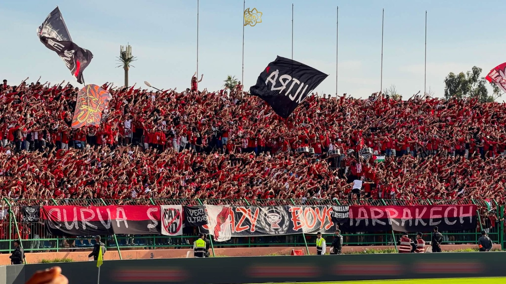


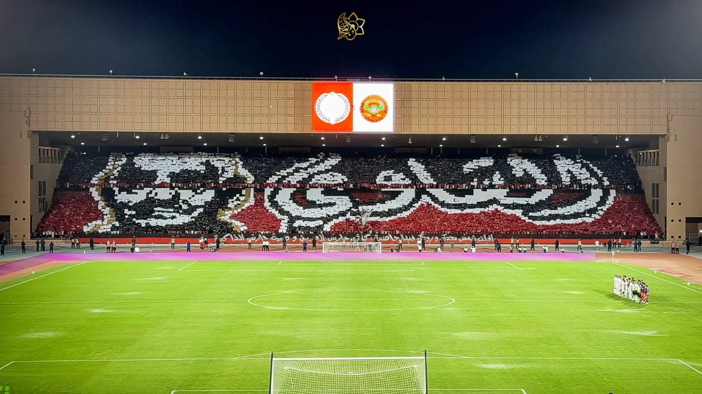
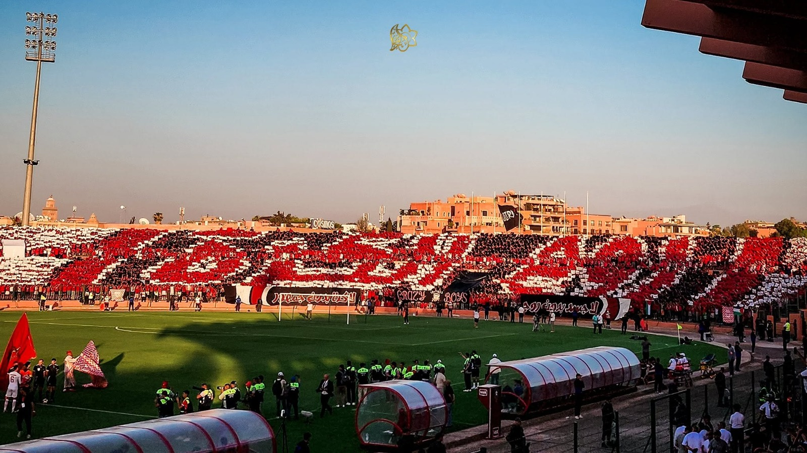
Club & supporters
Un public, une ambiance
Les tribunes de Marrakech font la force du Kawkab, match après match.
Ils soutiennent le Kawkab
Partenaires
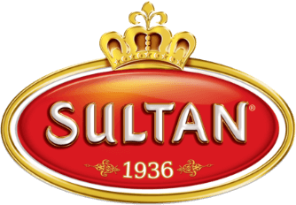
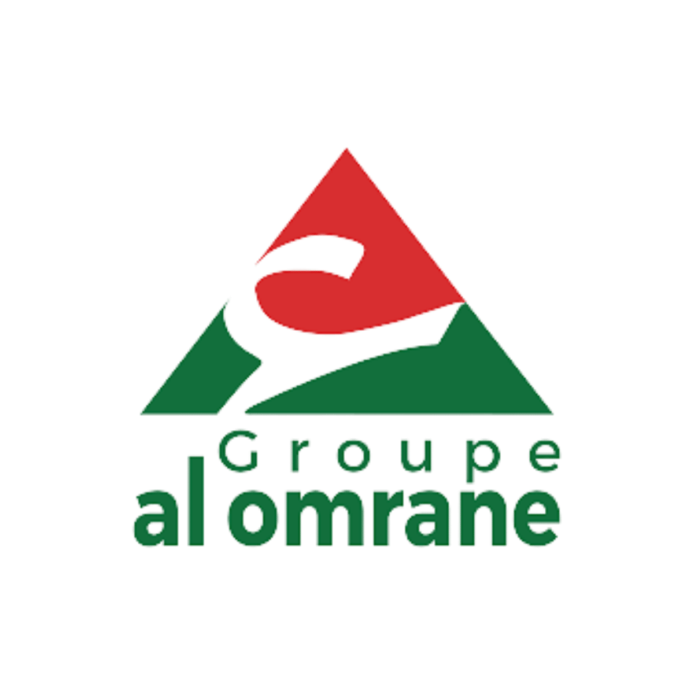
Newsletter